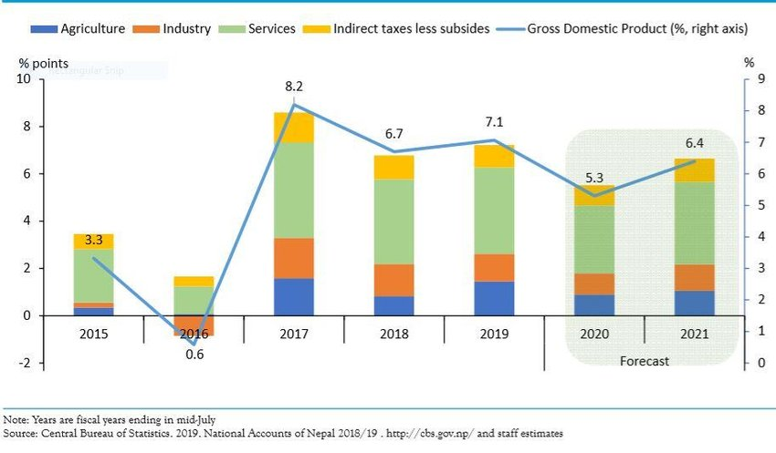

Home
Economy Of Nepal
The economy of Nepal is developing and largely dependent on agriculture and remittances. An agrarian society until the mid-20th century, Nepal entered the modern era in 1951 without schools, hospitals, roads, telecommunications, electric power, industry, or civil service. The country has, however, made progress toward sustainable economic growth since the 1950s. The country was opened to economic liberalization, leading to economic growth and improvement in living standards when compared to the past. The biggest challenges faced by the country in achieving higher economic development are the frequent changes in political leadership, as well as corruption.
Agriculture remains Nepal's principal economic activity, employing about 65% of the population and providing 31.7% of GDP. Only about 20% of the total area is cultivable; another 40.7% is forest, most of the rest is mountainous. Fruits and vegetables (apples, pears, tomatoes, various salads, peach, nectarine, potatoes), as well as rice and wheat are the main food crops. The lowland Terai region produces an agricultural surplus, part of which supplies the food-deficient hill areas.
